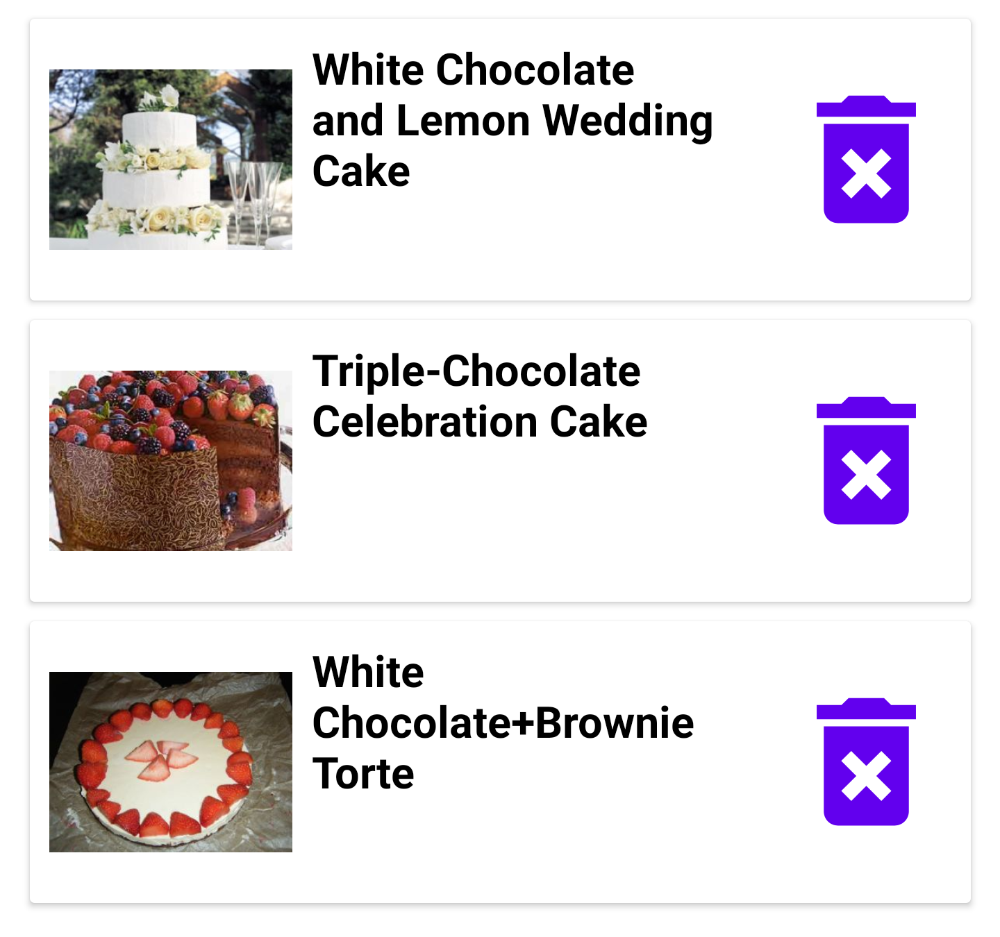

Saving Recipes
Saving a Recipe:
To save a recipe, simply click on the save icon attached to that recipe. This recipe will then appear in the saved recipes page.
Deleting a Saved Recipe:
To delete a recipe that was previously saved, go to the saved recipes page and click on the bin icon. This will permanently delete this recipe from your saved recipes.
